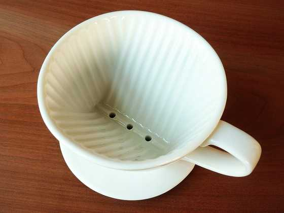
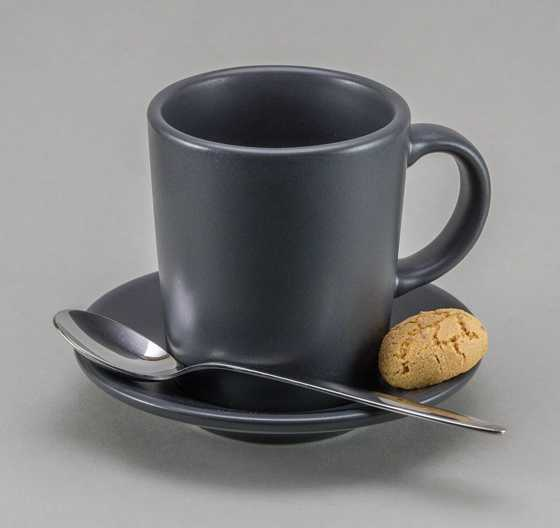
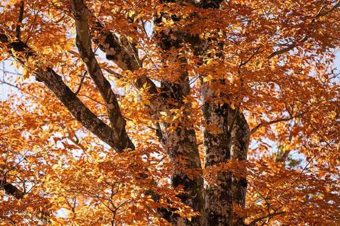
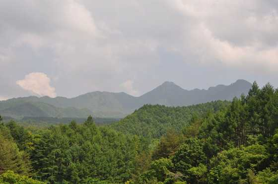
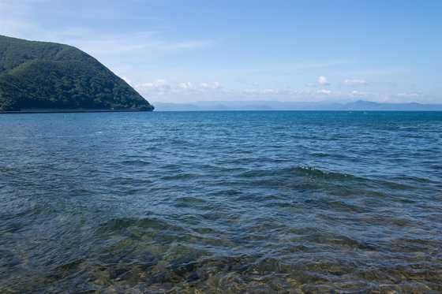
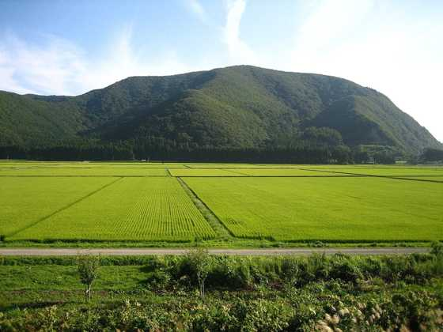
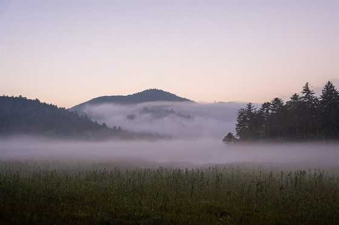

ABOUTお店の由来と想い
こはたcafé は、木幡山にある隠津島神社の参拝所のそばで、2021年11月6日に開店したカフェです。コンセプトは「時間を気にせず“ほっと休める場”」。参拝に訪れた方や、自然のなかで景色や読書を楽しみたい方に向けたお店として紹介されています。
隠津島神社は、神護景雲3年(769年)の勧請と伝わる古社で、宗像三女神を祀り、山全体が境内です。カフェはその第2社務所近くにあり、小窓からは安達太良山の眺めも楽しめるとされています。
確認できた事実開店:2021年11月6日 / 場所:隠津島神社の参宿所(参拝所そば)
確認できた事実冬はこたつ、クッション、駐車場あり(開店時の紹介記事より)
神社の宮司さんがコーヒーを淹れてくださる、と来店された方の投稿などで紹介されています。参拝される方や地元の方と、ゆっくりお話しできる空間を大切にしている様子がうかがえます。
※店名「こはた」は所在地の地名・木幡に由来すると思われますが、お店が由来を明言した資料は確認できていません。このページの文章や配色は、確認できた情報をもとに制作側が組み立てたイメージです。

MENUメニュー
過去の紹介記事で、次のようなメニューが取り上げられています。現在の提供内容は変わっている場合があります。
価格・提供日・最新のメニュー:準備中(Instagramでご確認ください)












VOICE口コミ(イメージ例)
以下は制作側が作成したイメージ例で、実在のお客様の声ではありません。
神社をお参りしたあとに立ち寄りました。急かされることなく、窓の外を眺めながらゆっくり過ごせました。
ハンドドリップのコーヒーが飲みやすく、お話もできて、ほっとする時間になりました。
山の空気のなかで本を読みながら一息。また参拝のときに寄りたいと思います。
ACCESSアクセス・お店のご案内
- 所在地
- 〒964-0203 福島県二本松市木幡治家49(隠津島神社 参宿所内)
- 電話
- 準備中
- 営業時間
- 過去の紹介では10:30〜16:30。現在の時間は準備中(Instagramでご確認ください)
- 定休日
- 不定休と紹介されています。営業日はInstagramで案内されています
- 価格
- 準備中
最新の情報はInstagramで
営業日や最新のメニューは、お店のInstagramでご確認ください。
Instagramを見る